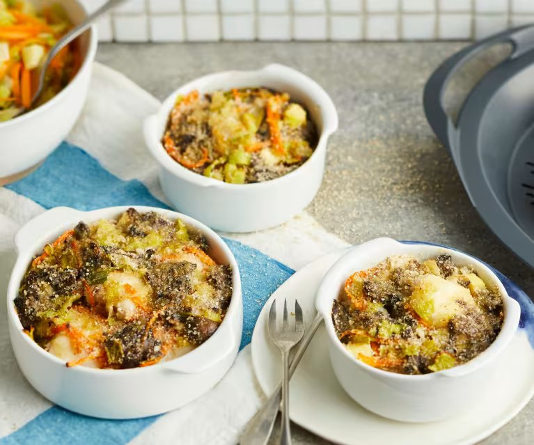

Cocotte de poisson aux champignons
Ingredients
- 40 g d'échalotes
- 0.5 gousse d'ail
- 40 g de beurre
- 600 g de filet de lotte
- 10 g d'huile d'olive
- 6 pincées de fleur de sel
- 700 g de champignons de Paris
- 4 pincées de sel
- 4 pincées de poivre
- 100 g de carotte
- 150 g de panais
- 150 g de poireau
- 100 g d'eau
- 1 c. à c. de farine
- 100 g de crème liquide
- 1 jaune d'oeuf
- 30 g de jus de citron

Préparation
Étape 1
Mettre 40 g d'échalotes et 0.5 gousse d'ail dans le bol et hacher 5 sec/vitesse 5. Ajouter la moitié de 40 g de beurre et rissoler 4 min/120ºC/vitesse mijotage, sans le gobelet.
Étape 2
Pendant ce temps, dorer 600 g de filet de lotte (6 médaillons) à la poêle sur feu vif avec le reste du beurre et 10 g d'huile d'olive. Les mettre sur le plateau vapeur et saupoudrer de 6 pincées de fleur de sel.
Étape 3
Ajouter dans le bol 700 g de champignons de Paris coupés en quatre, 4 pincées de sel et 4 pincées de poivre. Cuire 5 min/100ºC/vitesse mijotage. Pendant ce temps, mettre dans le Varoma 100 g de carotte en bâtonnets, 150 g de panais en dés et 150 g de poireau émincé.
Étape 4
Ajouter 100 g d'eau, mettre le Varoma en place et cuire à la vapeur 10 min/Varoma/vitesse 1. Insérer le plateau avec la lotte et poursuivre 10 min/Varoma/vitesse 1. Réserver au chaud.
Étape 5
Préchauffer le four à 180ºC. Ajouter 1 c. à c. de farine dans le bol et cuire 5 min/120ºC/sens inverse/vitesse 2.
Étape 6
Ajouter 100 g de crème liquide, 1 jaune d'oeuf et 30 g de jus de citron, cuire 5 min/85ºC/sens inverse/vitesse 1.
Étape 7
Répartir lotte et légumes dans 6 cocottes, napper de sauce et gratiner 15min au four.
Conseils
- Version sans chapelure (la recette d’origine en saupoudre avant de gratiner).